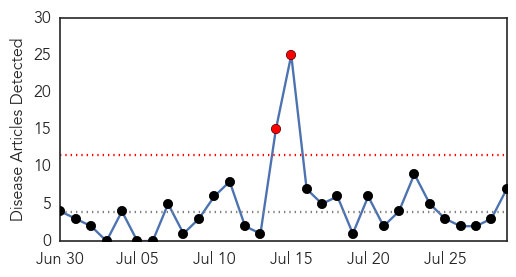
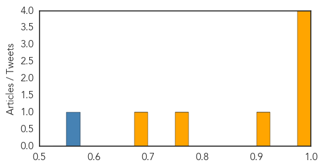
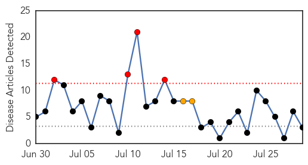
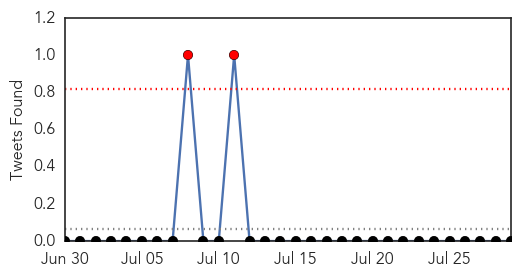
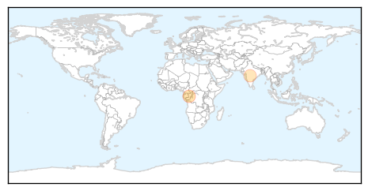

Cholera
30-Day Web Trend
2 alerts, 0 warnings

30-Day Twitter Trend
0 alerts, 0 warnings

Article Locations

Article Confidences
Top Articles:
- 0.990
- Cholera: Vaccination vs. Sanitation- The Borgen Project
- 0.988
- Cholera Kills Over 200 in Northern Cameroon
- 0.987
- The Chosun Ilbo (English Edition): Daily News from Korea
- 0.977
- La General Hospital inundated by cholera cases; 5 dead so far
- 0.914
- Flesh-Eating Bacteria Vibrio Vulnificus Found In Warm Florida Water (VIDEO) : Health : Headlines & Global News
- 0.755
- Bacteria related to Cholera found in Florida waters causes grave health concerns - Dumb Out
- 0.695
- Ebola Virus: NCAA Suspends ASky Operations To Nigeria
Top Tweets:
- 0.574
- RT: La General Hospital inundated by cholera cases; 5 dead so far: The La General Hospital in Accra has been force... http:…
Dengue Fever
30-Day Web Trend
4 alerts, 2 warnings

30-Day Twitter Trend
2 alerts, 0 warnings

Article Locations
Article Confidences

Top Articles:
Top Tweets:
-
No tweets found for Jul 29, 2014